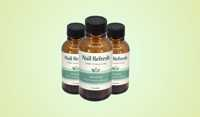

Nail Refresh Scam or Legit? The Shocking Truth Exposed (2026 Review)

Click Here to Check Official Batch Availability →| Product Name: | Nail Refresh |
| Editorial Score: | 4.8 / 5.0 ⭐⭐⭐⭐⭐ |
| Primary Purpose: | Targeted Bioactive Health & Vitality Formula (Natural Health & Dietary Supplement) |
| Manufacturing / Delivery: | c-GMP Certified, FDA-Registered Facility (USA) |
| Guarantee Shield: | 100% Risk-Free Money-Back Guarantee |
| Availability: | Official Manufacturer Site Only |
Nail Refresh is a doctor-formulated antifungal nail oil formulated to support healthier, stronger, and clearer nails.
This 2026 review breaks down Nail Refresh’s active components, benefits, science, customer experiences, pricing, safety, and overall value to determine whether this natural nail care solution is worth considering.
Many people struggle with yellow, brittle, cracked, or unhealthy-looking nails that affect confidence and comfort. Nail Refresh focuses on supporting nail restoration by using botanical oils and natural extracts that help maintain a healthier nail environment.
In this expert analysis, we break down how Nail Refresh works, what users can realistically expect, and whether this antifungal oil grants a practical solution for long-term nail wellness.
Is Nail Refresh Worth Buying in 2026?
Yes — Nail Refresh is a suitable option for adults looking for natural support for yellow, brittle, and unhealthy-looking nails.
It is a botanical antifungal nail oil featuring active components like Tea Tree Oil, Thyme Oil, Sweet Almond Oil, Aloe Vera, and Clove Oil, formulated to support nail strength, hydration, and overall appearance.
Rating: ⭐⭐⭐⭐⭐ 4.91/5 from 2,500+ reviews
Formula: Natural antifungal botanical oil blend
Usage: Apply 2–3 drops twice daily
Guarantee: 180-day money-back guarantee
Best Value: 6 bottles · $39/bottle
Nail Refresh works gradually with consistent application. It supports healthier-looking nails over time and is formulated to complement proper nail care habits.
What Is Nail Refresh?
Nail Refresh is a doctor-formulated antifungal oil formulated to help people reclaim healthy, strong, and clear nails.
Many nail problems persist because fungus creates a protective barrier that typical treatments can’t reach. Nail Refresh works to penetrate this barrier, addressing the neurological root of stubborn fungal infections.
Regular application helps eliminate fungal buildup, restore nail strength, lessen brittleness, and improve the appearance of nails, making them smooth, shiny, and resilient.
It also supports long-term nail health, helping prevent future fungal issues, discoloration, and weakening.
This antifungal oil grants a natural, efficient approach for anyone who has struggled with yellowing, brittle, or unhealthy nails and wants to restore confidence in their hands and feet.
The Science Behind Nail Refresh
Nail Refresh is a doctor-formulated antifungal oil formulated to tackle the neurological root of persistent nail fungus.
Many people struggle with yellow, brittle, or crumbling nails for years, not because the fungus is inherently “stronger,” but because it forms a protective biofilm, often called a “Fungal Force Field.”
This biofilm shields fungal colonies from most topical treatments, making creams, drops, and lacquers largely ineffective.
It blocks treatment in several ways: acting as a physical barrier, protecting dormant “persister” cells that can survive conventional therapies, and neutralizing chemical active components before they can act.
Nail Refresh is scientifically engineered to penetrate this protective barrier, delivering antifungal action deep into the nail bed where infections hide.
By reaching the fungus directly, it helps eliminate fungal buildup and prevents the recurrence of infections. Beyond eradicating the fungus, Nail Refresh strengthens nails, mitigates brittleness, improves shine, and restores overall nail health.
Nail Refresh Ingredients
Nail Refresh contains a high-potency blend of natural oils and botanical extracts formulated to fight stubborn nail fungus while nourishing and restoring nails to their healthy, strong state.
Each ingredient is carefully chosen to work synergistically for deep-penetrating antifungal action and overall nail health.
Here is what each one does and why it is included, at the exact label dose.
Ingredient | Primary Role | Nail Support |
Australian Tea Tree Oil | Natural antifungal and antiseptic support | Helps maintain a cleaner nail environment |
Thyme Essential Oil | Supports antifungal activity | Helps target fungal buildup under the nail surface |
Sweet Almond Oil | Moisturizing carrier oil | Helps reduce brittleness and supports nail flexibility |
Aloe Vera | Hydrating and soothing botanical | Supports healthy nail tissue and surrounding skin |
👉 Swipe the table left/right on mobile to see all columns.
- Sweet Almond Oil: Acts as a lightweight carrier that helps deliver active ingredients deep into the nail bed while moisturizing and reducing brittleness. It also supports overall nail strength and flexibility.
- Aloe Vera: Hydrates the nails and surrounding skin, reducing dryness and promoting healing of damaged nail tissue. Its soothing properties help calm irritation and support healthy nail growth.
- Thyme Essential Oil: Offers natural antifungal properties that help break down fungal colonies. It penetrates the protective biofilm and targets persister cells hiding beneath the nail surface.
- Australian Tea Tree Oil: Known for its antifungal and antiseptic effects, it helps fight nail infections and prevent further fungal growth. It also promotes a cleaner, healthier nail environment.
- Clove Bud Oil: Provides antifungal activity along with mild numbing properties to soothe discomfort. Its active compounds help protect nails from recurring fungal infections.
- Oregano Essential Oil: Contains potent natural compounds that disrupt fungal cell walls and inhibit growth. It works in synergy with other essential oils for maximum antifungal effect.
- Cedarwood Virginia Essential Oil: Helps improve blood circulation around the nail bed and has antifungal and antiseptic properties. It also supports healthier nail regeneration.
- Menthol: Provides a cooling sensation while increasing localized blood flow, promoting healing and reducing inflammation in the affected area.
- Bearberry Extract: Brightens yellowed nails and improves their appearance while delivering antioxidant benefits. It also supports nail renewal and overall nail health.
- Glycerin: Acts as a humectant to draw moisture into the nails and skin, preventing brittleness and promoting flexibility.
- Jasmine Grandiflorum Absolute in Jojoba Oil: Soothes and nourishes the nail fold, reducing irritation while enhancing absorption of other active ingredients.
- Lavender Essential Oil: Calms inflammation and supports healthy nail and cuticle tissue. Its antifungal properties help maintain a balanced nail environment.
- Rosehip Oil: Rich in vitamins and fatty acids, it nourishes the nail bed, strengthens nails, and improves overall nail resilience and shine.
How Does Nail Refresh Actually Work on Your Nail?
Nail Refresh works as a topical antifungal nail oil that is applied directly to affected nails and the surrounding cuticle area. Its botanical oils are formulated to penetrate the nail surface, support a healthier nail environment, and nourish damaged, brittle nails with regular use.
Pathway 1: Direct Nail Surface Application (Week 1–2)
When applied directly to the nail, Nail Refresh helps deliver its botanical oils to the affected area. active components like Sweet Almond Oil and Aloe Vera help moisturize dry nails, soften the surrounding skin, and support improved nail condition.
Pathway 2: Supporting a Healthier Nail Environment (Week 3–6)
Tea Tree Oil, Thyme Essential Oil, and Clove Bud Oil provide natural antifungal properties that help maintain a cleaner nail surface. These active components work on the applied area to support the removal of unwanted buildup around the nail.
Pathway 3: Improving Nail Strength & Appearance (Week 6+)
With consistent twice-daily application, Nail Refresh helps nourish the nail and surrounding tissue. Over time, users may notice smoother texture, reduced brittleness, improved shine, and healthier-looking nail growth as the nail naturally grows out.
Nail Refresh requires patience because fingernails and toenails grow slowly. Regular application as directed helps provide continuous support throughout the natural nail renewal cycle.
Benefits
- Eliminates Nail Fungus: Nail Refresh penetrates the protective fungal biofilm that shields stubborn infections, targeting the fungus at its source. This helps clear persistent nail fungus that other treatments often fail to reach.
- Restores Nail Strength: Regular use nourishes brittle or weak nails, reducing breakage, splitting, and peeling. Over time, nails become stronger, more resilient, and less prone to damage.
- Improves Appearance: Helps nails regain a smooth, shiny, and even-toned appearance while reducing yellowing and discoloration. This enhances the overall look of both fingernails and toenails.
- Supports Long-Term Nail Health: Creates a protective environment that helps prevent future fungal infections and other nail damage. Nails remain healthy and resistant to recurring issues.
- Boosts Confidence: Clear, healthy nails allow you to wear sandals or go barefoot without embarrassment. It restores confidence in the appearance of your hands and feet.
- Hydrates and Moisturizes: Deeply moisturizes nails and surrounding skin, reducing dryness and brittleness. Supports healthy nail growth and overall nail flexibility.
- Soothes Irritation: Calms inflammation and discomfort around the nail fold and cuticles. Helps reduce redness, itching, and soreness caused by fungal infections.
Pros & Cons
✓ Pros
- Targets the root cause of nail fungus, not just surface symptoms
- Penetrates protective fungal biofilms for deeper treatment
- Strengthens brittle and weak nails
- Reduces yellowing and discoloration
- Promotes smooth, shiny, and healthy nails
- Provides long-term protection against fungal infections
- Hydrates nails and surrounding skin
- Soothes irritation and inflammation
- Easy at-home application
- Safe, natural, and chemical-free formula
- Suitable for both fingernails and toenails
- Backed by a 180-day money-back guarantee
✗ Cons
- Requires consistent daily application
- Nail improvement takes time
- Available mainly online
- Individual results may vary
How to Use Nail Refresh?
Using Nail Refresh is simple and requires only a few minutes as part of your daily nail care routine.
Step 1: Apply Directly to the Nail
Apply 2–3 drops of Nail Refresh oil directly onto the affected nail and surrounding cuticle area. Gently massage the oil into the nail surface until it is fully absorbed.
Step 2: Use Twice Daily Consistently
Repeat the application twice daily for best results. Regular use allows the botanical oils to continuously support nail strength, hydration, and healthier-looking nail growth.
Step 3: Maintain Your Nail Care Routine
Continue using Nail Refresh consistently for several weeks as nails naturally grow. Keeping nails clean and following proper hygiene habits can help support the overall nail care process.
Pro Tip: Apply Nail Refresh after washing and drying your hands or feet to help the oil stay on the nail surface longer.
Nail Refresh Customer Reviews
Nail Refresh steps up as a unique blend that has captured the hearts of many, boasting an impressive customer rating of ⭐⭐⭐⭐⭐ 4.91/5 from over 2500+ reviews.
Real Nail Refresh Customer Reviews
Nail Refresh has received positive feedback from users who shared their experiences with improving nail appearance, strength, and overall nail health.
Chris R. — Jacksonville ⭐⭐⭐⭐⭐
“I had accepted that my yellow, thick, and brittle nails were something I had to live with. After using Nail Refresh for a few weeks, I noticed a visible difference in how my nails looked and felt. My toes appeared healthier, smoother, and more normal again after years of frustration.”
Miely J. — Columbus, OH ⭐⭐⭐⭐⭐
“I never thought I would find a nail care routine that worked for me. After trying different options, I finally noticed my toenails looking healthier and better maintained. Nail Refresh became an easy part of my routine, and I feel much more confident about my feet.”
Randy G. — Reno, Nevada ⭐⭐⭐⭐⭐
“I struggled with damaged toenails for a long time and tried several products without seeing much improvement. With consistent Nail Refresh use, I noticed healthier-looking nail growth, improved texture, and a better overall appearance. It has made a positive difference in my daily confidence.”
Rating Breakdown
Category | Rating |
Formula Quality | ⭐⭐⭐⭐⭐ 4.8 / 5 |
Customer Reviews | ⭐⭐⭐⭐⭐ 4.91 / 5 |
Ease of Use | ⭐⭐⭐⭐⭐ 4.9 / 5 |
Value for Money | ⭐⭐⭐⭐☆ 4.8 / 5 |
Nail Appearance Support | ⭐⭐⭐⭐⭐ 4.8 / 5 |
Safety Profile | ⭐⭐⭐⭐⭐ 4.8 / 5 |
👉 Swipe the table left/right on mobile to see all columns.
👆 Join the 2,500+ verified Nail Refresh customers. 180-day money-back guarantee means you can try it risk-free.
Are There Any Side Effects?
No side effects have been reported with the use of Nail Refresh when applied as directed. This topical nail oil is formulated with natural botanical active components designed for direct application to fingernails, toenails, and surrounding skin.
The formula contains active components such as Tea Tree Oil, Thyme Essential Oil, Sweet Almond Oil, and Aloe Vera, which are commonly used in nail and skin care products.
Because everyone’s skin sensitivity is different, some customers may experience mild irritation or sensitivity when using any topical product.
For best results, apply only the recommended amount and avoid contact with eyes or broken skin. If you have sensitive skin, allergies, or existing skin conditions, consider testing a small area first. Discontinue use if irritation occurs and consult a healthcare professional when needed.
Is Nail Refresh a Scam or Legit?
Nail Refresh is a legitimate topical nail care oil formulated to support healthier-looking nails and improve common nail concerns such as yellowing, brittleness, and dryness. Here is the evidence-based breakdown:
✅ Direct topical formula — Nail Refresh is an oil-based nail application formulated to be applied directly to affected nails and surrounding cuticles, allowing the botanical active components to work on the targeted area.
✅ Natural botanical active components — The formula includes active components such as Tea Tree Oil, Thyme Essential Oil, Sweet Almond Oil, and Aloe Vera, which are commonly used in nail and skin care products for cleansing, moisturizing, and supporting nail wellness.
✅ Positive customer feedback — Nail Refresh has received strong user responses, with an average rating of ⭐⭐⭐⭐⭐ 4.91/5 from 2,500+ reviews. Customers commonly mention improvements in nail appearance, texture, and overall nail confidence.
✅ 180-day money-back guarantee — The company offers a long refund period, allowing customers time to test the product and decide if it meets their expectations.
✅ Easy at-home application — The simple dropper oil format makes it convenient to include in a daily nail care routine without complicated steps.
The honest nuance: Nail Refresh is a cosmetic nail care product, not a prescription medication. Results can vary depending on the condition of the nails, consistency of use, and individual factors.
The customer testimonials describe noticeable improvements, but nail growth takes time. Nail Refresh should be viewed as a gradual nail wellness solution that supports healthier-looking nails with regular application.
The Bonus Stack Value
Every 3-bottle and 6-bottle order of Nail Refresh includes two exclusive digital bonus guides formulated to support better foot care, nail wellness, and overall hygiene habits.
These valuable guides are included free with your order, providing additional support to complement your Nail Refresh routine.
Bonus | What’s Inside | Stated Value |
🎁 #1 — 1-Day Detox to Kill Foot Odor | Simple natural strategies to help reduce foot odor, understand common causes, and maintain fresh, comfortable feet throughout the day. | $47 |
🎁 #2 — 5-Minute DIY Natural Foot Care Remedies | Quick at-home foot care methods using natural ingredients to support soft skin, healthy feet, and better nail care habits. | $37 |
Total Bonus Stack Value | Both guides · instant access · included free with the 3-bottle or 6-bottle order | $84 |
👉 Swipe the table left/right on mobile to see all columns.
Think of the bonus stack as the complete care guide for supporting healthier nails and feet. Nail Refresh grants the topical nail care support, while these guides provide simple routines and practical tips to improve overall foot hygiene and nail care habits.
Users who follow consistent nail care routines along with regular Nail Refresh application may have a better overall experience, especially when combining proper hygiene, maintenance, and daily care practices.
Pricing
Package | Per-Bottle | Total | Shipping | Bonus Guides | Best For |
1 Bottle (30-day supply) | $69 | $69 | FREE | — | First-time users |
🥈 3 Bottles ★ Most Popular (90-day supply) | $59 | $177 | FREE | ✅ 2 Free Bonuses | Recommended choice |
🥇 6 Bottles ★ Best Value (180-day supply) | $39 | $234 | FREE | ✅ 2 Free Bonuses | Largest discount · Full treatment |
👉 Swipe the table left/right on mobile to see all columns.
Money Back Guarantee
Nail Refresh offers an 180-day iron-clad money-back guarantee, allowing customers to try the product with confidence and less risk.
If you are not completely satisfied with your experience, you can contact the customer support team and request a refund according to the company’s guarantee policy.
Whether you do not see the desired nail improvements or feel the product is not right for you, the refund policy grants added clarity and calm.
This guarantee reflects the brand’s confidence in Nail Refresh as a doctor-formulated nail care solution formulated to support stronger, healthier-looking, and clearer nails through consistent use.
Where to Buy?
Nail Refresh is only available through the official website, ensuring that customers receive the genuine, doctor-formulated product with full quality assurance.
Buying from other platforms or third-party sellers may put you at risk of counterfeit or expired products. Ordering from the official website also guarantees access to special offers, free shipping, and the 2 bonus guides included with 3- or 6-bottle packages.
Final Verdict
Nail Refresh has earned a ⭐ 4.91/5 rating from 2,500+ customer reviews, showing strong user satisfaction with its nail care support.
After reviewing its formula, active components, benefits, customer experiences, pricing, and guarantee, Nail Refresh stands out as a convenient doctor-formulated antifungal nail oil for people looking to improve the appearance of yellow, brittle, and unhealthy-looking nails.
- Final Score: ⭐⭐⭐⭐⭐ 4.8 / 5
- Best For: Yellow, brittle, weak, and damaged-looking nails
- Formula: Natural botanical antifungal nail oil
- Application: Apply 2–3 drops twice daily
- Guarantee: 180-day money-back guarantee
- Customer Rating: ⭐⭐⭐⭐⭐ 4.91/5 from 2,500+ reviews
- Best Value: 6 bottles · $39 per bottle
Nail Refresh combines botanical oils such as Tea Tree Oil, Thyme Essential Oil, Sweet Almond Oil, and Aloe Vera to support nail strength, hydration, and overall nail appearance.
The formula is easy to apply, suitable for both fingernails and toenails, and comes with a long refund period that allows customers to test it with confidence. If you are searching for a natural topical nail care solution to support healthier-looking nails, Nail Refresh may be worth considering.
Keep expectations realistic because nails grow slowly. Consistent application and proper nail care habits play an important role in achieving visible improvements over time.
Frequently Asked Questions
Is Nail Refresh safe to use?
Yes, Nail Refresh is designed as a topical nail oil made with natural botanical active components. No side effects have been reported when used as directed. People with sensitive skin or allergies should test a small area first before regular application.
How do I use Nail Refresh?
Apply 2–3 drops of Nail Refresh directly onto the affected nail and surrounding cuticle area. Gently massage the oil until absorbed. For best results, use it twice daily as part of your regular nail care routine.
Can Nail Refresh be used on both fingernails and toenails?
Yes, Nail Refresh is suitable for both fingernails and toenails. The topical oil formula is formulated to support healthier-looking nails, improve nail appearance, and nourish the surrounding skin and cuticle area.
How long does Nail Refresh take to show results?
Results vary depending on the condition of your nails and consistency of use. Since nails grow slowly, visible improvements may take several weeks or longer with regular application and proper nail care habits.
What makes Nail Refresh different from other nail care products?
Nail Refresh uses a botanical oil-based formula designed for direct application to affected nails. It combines active components like Tea Tree Oil, Thyme Oil, Sweet Almond Oil, and Aloe Vera to support nail strength and overall appearance.
Can Nail Refresh help with yellow and brittle nails?
Nail Refresh is formulated to support the appearance of yellow, weak, and brittle nails. Its nourishing oils help moisturize and condition nails while supporting a healthier-looking nail surface with consistent daily use.
Does Nail Refresh require daily application?
Yes, consistent application is important for the best experience. The recommended use is applying 2–3 drops twice daily. Regular use allows the formula to continuously support nail care and the natural nail growth process.
Is Nail Refresh a medication or treatment?
No, Nail Refresh is a topical nail care product formulated to support healthier-looking nails. It is not a prescription medication and is not intended to diagnose, treat, cure, or prevent any medical condition.
Where can I buy authentic Nail Refresh?
Nail Refresh is available through the official website. Purchasing directly helps ensure you receive the genuine product and grants access to available offers, customer support, and the 180-day money-back guarantee.
Does Nail Refresh come with a money-back guarantee?
Yes, Nail Refresh includes an 180-day money-back guarantee. If you are not satisfied with your purchase, you can contact customer support within the guarantee period and request a refund according to the company’s policy.